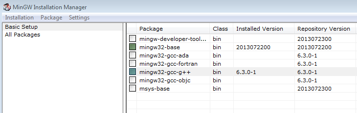

<!DOCTYPE html>
<html lang="es">
	<head>
		<meta charset="utf-8">
		<title>Programs, languages and compilers</title>
		<meta name="viewport" content="width=device-width, initial-scale=1.0">
		<link rel="stylesheet" href="../../../reveal/dist/reveal.css">
		<link rel="stylesheet" href="../../../reveal/dist/theme/white.css" id="theme">
		<link rel="stylesheet" href="../../../reveal/plugin/highlight/custom.css">
	</head>

	<body>
		<div class="reveal">
			<div class="slides">
                <section data-markdown>
<script type="text/template">
## Programs, languages and compilers
### First steps with C and C++
</script>
</section>

<section data-markdown>
<script type="text/template">
## C
    
* Parent language for most of current languages
* Beginning of the 70s
* High and low level structures (very efficient)
* Useful for operating systems, compilers, game engines...

</script>
</section>
    
<section data-markdown>
<script type="text/template">
## C++
    
* Evolution of C
* End of the 70s
* C compatibility + OOP (classes and objects)
* Also efficient for game engines (Unreal, Cocos2D, SDL...)

</script>
</section>

<section data-markdown>
<script type="text/template">
## Installing C/C++ (1/3)

- **Linux**: installed by default (`gcc` / `g++`)
- **Mac**: installed with XCode
- **Windows**: install [MinGW](https://sourceforge.net/projects/mingw/)
    - Choose `mingw32-gcc-g++` and `mingw32-base` packages in installer
    - Update PATH variable with *bin* subfolder (typically `C:\MinGW\bin`) 
</script>
</section>

<section data-markdown>
<script type="text/template">
## Installing C/C++ (2/3)

</script>
</section>
        
<section data-markdown>
<script type="text/template">
## Installing C/C++ (3/3)

Checking installation

```
gcc
```

Output similar to:

```
gcc: fatal error: no input files
```
</script>
</section>

<section data-markdown>
<script type="text/template">
    
## Exercise
    
Create a source file called **test.c** in your source folder with this code. Compile it using **gcc -o test test.c** and run it

```c
#include <stdio.h>

int main()
{
    printf("Hello");
    return 0;
}
```

</script>
</section>
    
            </div>
		</div>

		<script src="../../../reveal/dist/reveal.js"></script>
		<script src="../../../reveal/plugin/zoom/zoom.js"></script>
		<script src="../../../reveal/plugin/markdown/markdown.js"></script>
		<script src="../../../reveal/plugin/highlight/highlight.js"></script>
		<script>

			// Also available as an ES module, see:
			// https://revealjs.com/initialization/
			Reveal.initialize({
				controls: false,
				progress: false,
				center: true,
                hash: true,
                width: "80%",

				// Learn about plugins: https://revealjs.com/plugins/
				plugins: [ RevealZoom, RevealMarkdown, RevealHighlight ]
			});

		</script>

	</body>
</html>
